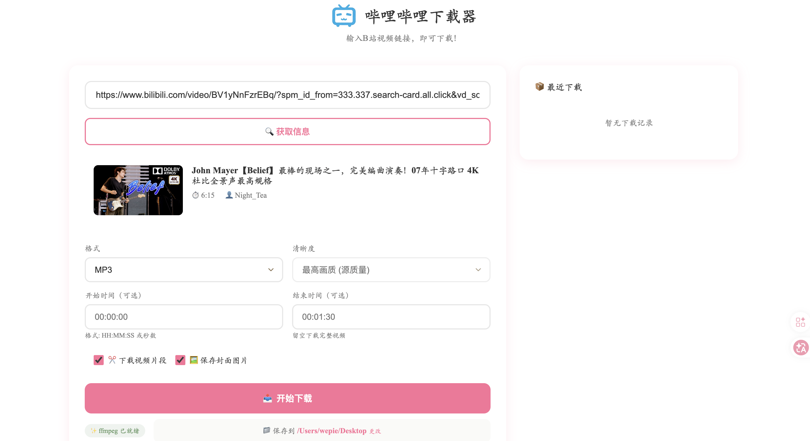

我喜欢弹电吉他，经常在 B 站保存吉他手现场视频导入库乐队录音。觉得现有下载工具不好用，于是借鉴 yt-dlp 开源项目，用 Vibe Coding 做了一个带 Web 界面的下载器。
查看 GitHub 源码 →一个简单的个人需求，如何变成一个完整的开源工具？
我喜欢弹电吉他，经常需要把 B 站上吉他手的现场演奏视频保存下来，导入库乐队 (GarageBand) 进行跟弹录音练习。市面上的下载工具要么界面复杂、要么需要付费、要么操作繁琐，于是决定自己做一个。
项目的下载核心借鉴了 GitHub 上的经典开源项目 yt-dlp，我在此基础上用 Python + Flask 封装了一套 Web 交互界面，做到粘贴链接即可预览和下载，双击启动脚本即用。
坦诚说明：本项目使用 Vibe Coding 方式开发，借助 Claude Code 辅助编码。下载引擎基于开源项目 yt-dlp，我负责需求定义、界面设计、功能整合和用户体验把控。

从粘贴链接到文件保存，4步完成视频下载。
复制 B 站视频 URL，粘贴到输入框
支持多种URL格式自动获取标题、封面、时长、UP主信息
实时预览画质 360p~4K，格式 MP4/MP3/FLAC
全参数可配置实时进度反馈，文件保存到指定目录
后台异步处理每个功能都围绕"简单好用"的原则设计，让非技术用户也能轻松上手。
作为一个个人项目，它体现了哪些能力？
从真实痛点出发，解决自己遇到的问题，而不是为了做项目而做项目
前后端一体化设计，Python 后端 + Web 前端 + FFmpeg 多媒体处理，单文件1543行完整应用
双击即用的启动脚本、环境自检、下载历史、配置持久化，每个细节都在降低使用门槛
熟练使用 Vibe Coding 开发方式，能通过 AI 工具高效完成从构思到交付的全流程
轻量级技术栈，追求简单实用。
下载核心基于 yt-dlp 开源项目，通过 Vibe Coding 方式（Claude Code 辅助）高效开发
使用 Antigravity + Claude Code 以 Vibe Coding 方式完成开发，以下是项目的关键数据。
发现问题，用技术解决问题。
这就是我做项目的方式。